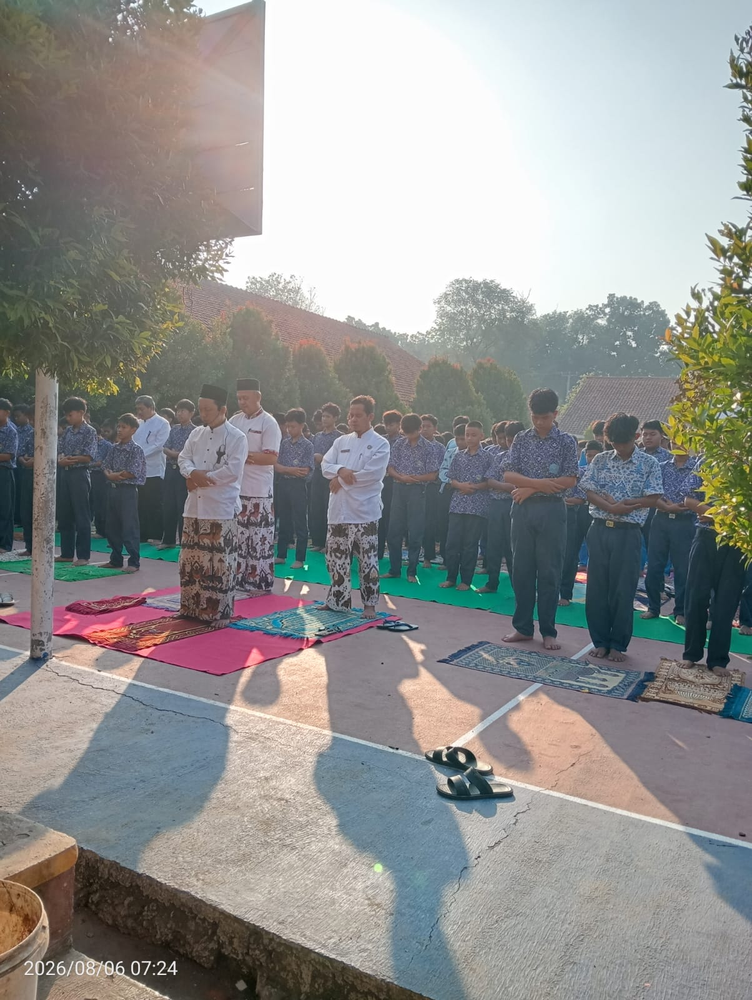
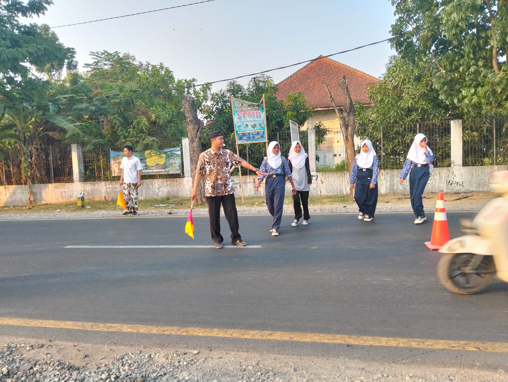

Kegiatan SMP Negeri 2 Ciledug
Berikut merupakan beberapa kegiatan rutin yang dilaksanakan di SMP Negeri 2 Ciledug.

Sholat Dhuha
Kegiatan sholat dhuha dilaksanakan sebagai bagian dari pembiasaan keagamaan bagi peserta didik.

Jaga Jalan
Kegiatan jaga jalan dilakukan sebagai bentuk kedisiplinan dan kepedulian terhadap keamanan lingkungan sekolah.

Sambut Siswa
Kegiatan menyambut siswa dilakukan untuk menciptakan suasana sekolah yang ramah dan positif.